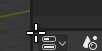
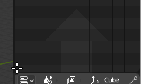

区域¶
应用窗口在桌面上总是显示为矩形，并被分割为一些可改变大小的区域。一个区域包含特定类型 编辑器 的工作区，如3D视图编辑器，或者大纲视图。区域间以圆角边界隔开。

区域间以圆角边界(黄色)隔开.¶
分割与合并¶

分割区域将新增一个新的区域，合并两个区域则将关闭一个区域。当鼠标指针置于区域一角，待其变成"十"字(✛)。按下 LMB 将激活分割或合并命令。向内拖拽 分割 区域，拖拽的方向可以是水平或者垂直的。

将属性编辑器合并至大纲视图编辑器。¶
向外拖拽 合并 两个区域。最终会关闭的区域会颜色变暗并显示箭头，这时候用户就可以通过移动鼠标选择想要关闭的区域。松开 LMB 完成合并操作。如在松开鼠标前按下 Esc 或 RMB ，将中止操作。
Note
合并拖拽的方向必须有相同尺寸(等宽或高)的区域，这样合并后的区域才能是矩形的。
复制区域到新窗口¶
参考
- 菜单
可以使用 创建一个新的浮动窗口。
新窗口是一个全功能窗口，是Blender相同实例的一部分。这在用户使用多显示器时很有用。
用户还可以在区域拐角按下 Shift-LMB ，然后轻轻向外拖拽，创建新窗口。
可以使用系统的 关闭窗口 关闭。
切换为最大化区域¶
参考
- 菜单
- 快捷键
Ctrl-Spacebar
最大化后的区域会填满整个应用窗口。用户可以使用 菜单或快捷键 Ctrl-Spacebar 最大化区域。再次使用该快捷键，或者栏 RMB 并选择标题上的 返回前一视图 按钮恢复正常区域大小。
Note
使用键盘快捷键时，获得最大化的区域是鼠标当前停留区域。